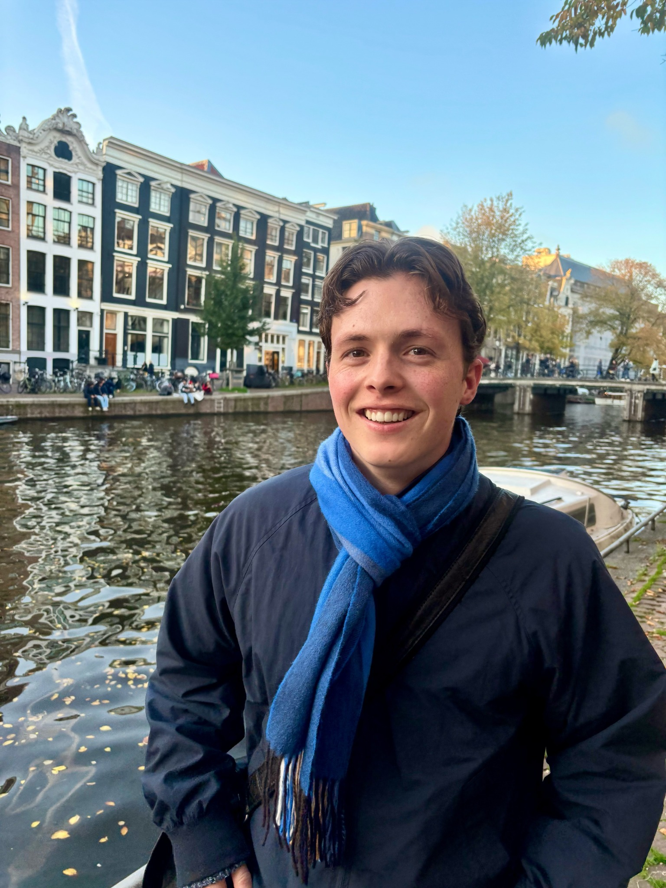
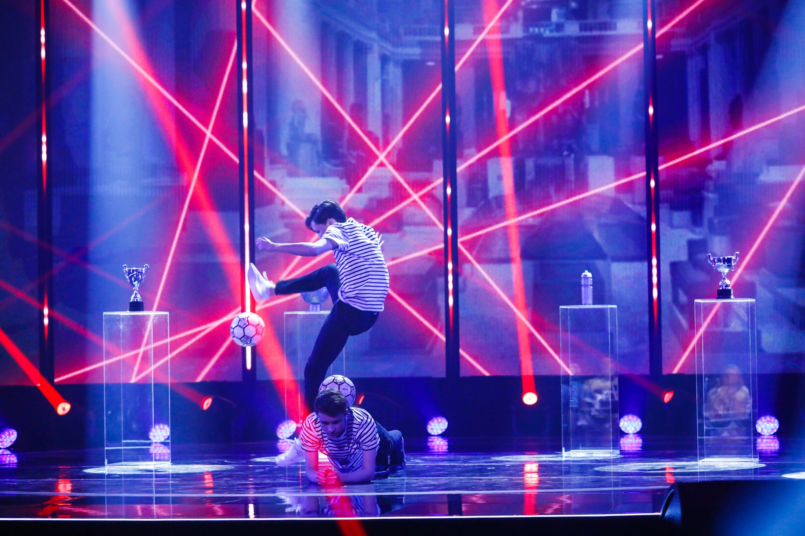
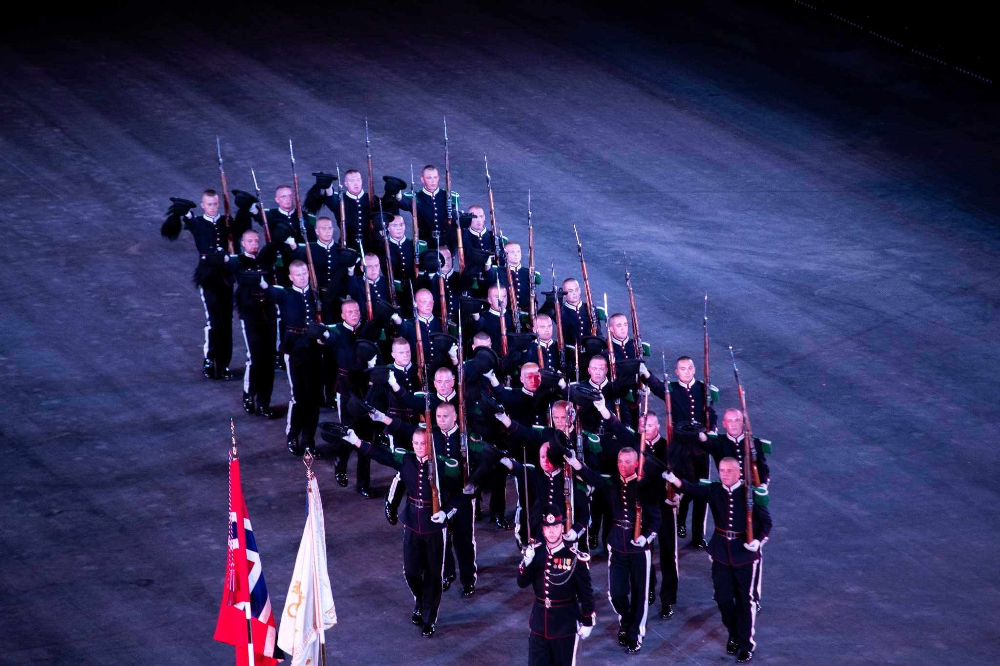
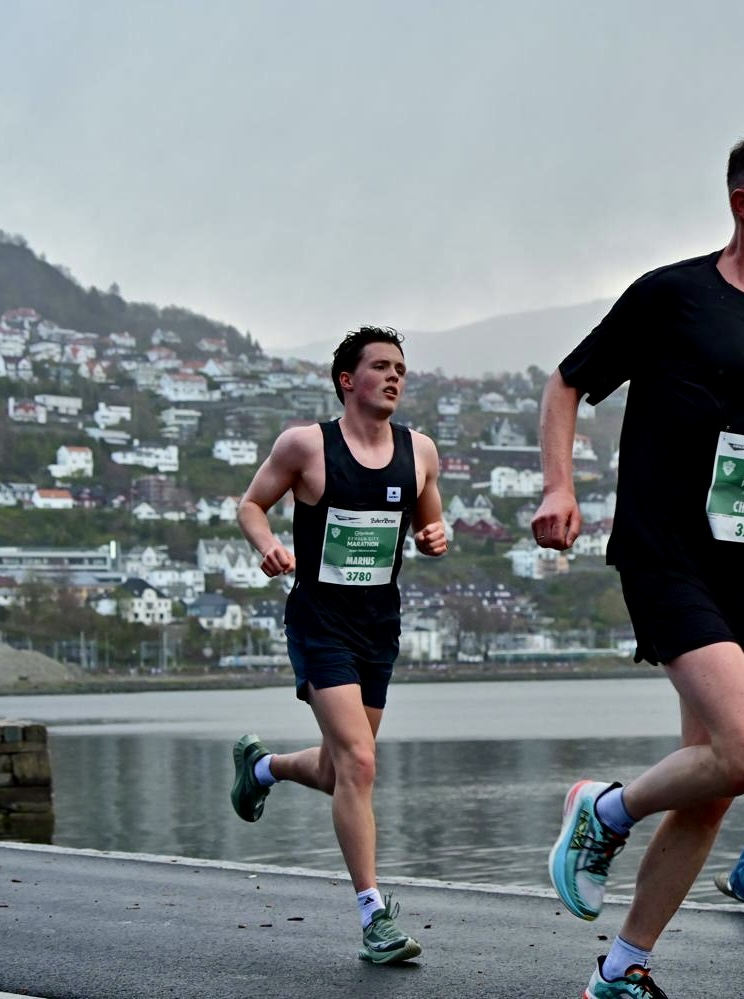

Hei, jeg heter Marius.
Mange baller
i luften.
Jeg er nysgjerrig av natur, glad i å være i aktivitet og ganske dårlig på å holde meg til bare én interesse om gangen.
Jeg studerer medie- og interaksjonsdesign på Universitetet i Bergen. Veien hit har gått via både scenelys, militær presisjon og sykehusganger.
Bla ned og bli bedre kjent
Noen omveier
er verdt å ta.
Jeg har ikke fulgt én rett linje. Her er noen av stoppene som har formet veien frem til der jeg er i dag.

På scenen.
Som 16-åring deltok jeg i Norske Talenter mens jeg gikk på videregående. Det er kanskje ikke det første man forventer å finne i en designportefølje, men det sier litt om hvor mange ulike ting jeg liker å prøve.
I Garden.
Etter videregående gikk turen til Forsvaret. Jeg tjenestegjorde i Hans Majestet Kongens Garde, der jeg kom inn i Drilltroppen etter en seleksjonsperiode. Drilltroppen representerer Garden gjennom presisjonsdrill og oppvisninger.

03 / Veien videre
Fra sykehusganger
til brukeropplevelser.
Etter Forsvaret jobbet jeg som portør på Haukeland universitetssjukehus. Der fikk jeg oppleve en kompleks arbeidsplass på nært hold.
Jeg begynte deretter å studere kognitiv vitenskap, før jeg etter ett år byttet til medie- og interaksjonsdesign. Nå er jeg på siste året av bacheloren på UiB.
Det jeg liker aller best med design, er å forstå problemet først – og så finne ut hvordan det kan løses på en måte som faktisk fungerer for folk.
04 / Utenfor skjermen
Helst litt
ute av kontoret.
Jeg trives best når det skjer noe. Ved siden av studiene leder jeg SVI Løpegruppe, en studentløpegruppe med rundt 200 medlemmer. Ellers blir det mye løping, ski, friluftsliv og buldring.



Det var litt om meg.
Se hva jeg har jobbet med